Project Requirements
Shelter Connect
Team TBD - Joseph Zhang, Ryker, Schwartzenberger, Simon Bang, Sunwoo Kang
Flowchart:
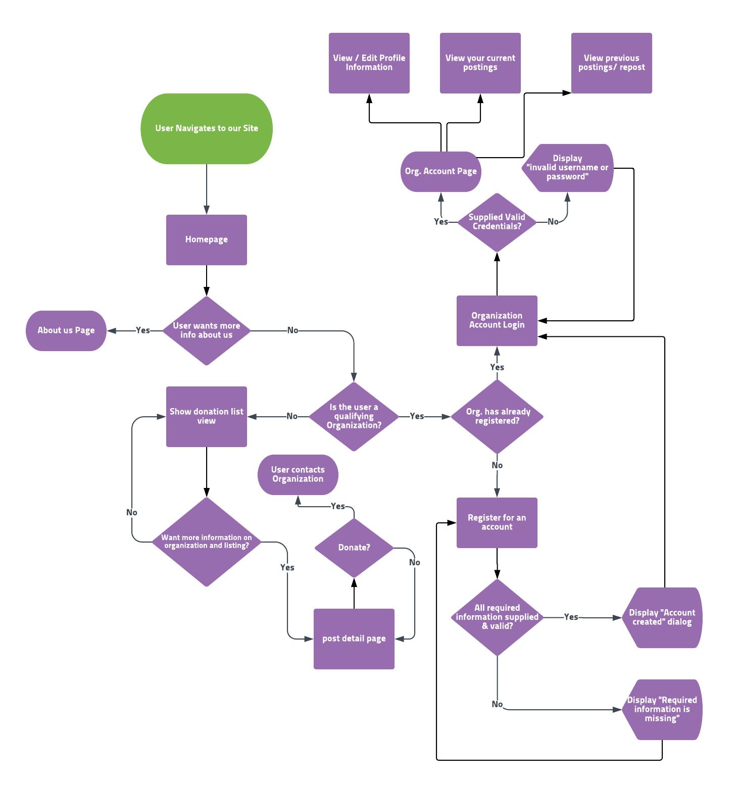
Terminology:
- Donation Requests - Donations Request are submitted by qualifying organizations who have made an account on our website. These requests are listed on the homepage where individual users may browse these requests and contact the organization if they choose to donate all or a portion of the requested items specified in the Donation Request.
- Donation Types - Donation types are how we classify the kinds of items our website will allow to be posted as Donation Requests by participating Organizations. These donation types are: foods, clothing, personal care, household goods, and leisure.
- There will be two distinct types of user who will use our site. They are defined as:
- Organization / Org. - These are the shelters and organizations working with the homeless that will use the site to post “donation requests”.
- Individual User - These are the individuals who will browse our site and if they choose, fulfill one of the donation requests
Overview:
- The application to be built should be be publicly accessible on the internet and viewed through a web browser.
- The application should be designed and implemented in such a way to be functional only on desktop browsers
- Individual
- Organizations will be able to register for an account with our site, sign in, sign out, and edit their There will be a registration page, login, and user account page for organizations that use our site.
- Individual users will not have the ability to sign in, nor will they need to to browse the site and donate their items;
- The application will allow for homeless shelters and non-profit organizations working with homeless people to create “donation requests” which are then displayed on our site.
- Donation requests, account information, and user logins should be stored in a secure, highly available database
- Donations are arranged by the organization and the individual using the contact information provided in the donation request.
- Navigation Bar would be in the header area of every page of the website
- Nav bar would contain logo of our website on the left, in when clicked, would return user to the homepage
- The menu on the right would contain the items that link to a registration page, sign in page, and about us page.
Homepage:
- There will be a banner image with a short message explaining our mission and a button to see the donation requests should be displayed.
- When the button is clicked on, the banner area should be hidden and the list of donation requests below should take up the unused space, and the navbar should be fully displayed.
- Below this button, there will be text and a link directing new organizations to our Organizational Sign-up page.
- There should be a link to a login screen for organizations to access their account and settings, which can be found in the navbar.
- The main content area of the homepage will be comprised of a list of donation requests.
- This list should be up to date and generated dynamically, based on the donation requests.
- The requests will appear upon refreshing page.
- The list can be sorted by date added, or by distance from a zip code entered by the user.
- The default will be date added, newest first.
- The list can be further filtered by the donation types specified in the overview:
- Distance
- Type of request
- Organization
- We will focus on only a few (<10) Seattle organizations in the current moment, so this will appear as a dropdown menu.
- Each listing on this page should display an icon representing the donation type, the name of the Organization, their location for drop off, and an optional piece of text including more information.
- The ‘more information’ text snippet should be truncated to ~200 characters if it exceeds that. The full text will be displayed on the Post detail page
- When a listing is clicked on, the user should be taken to the Individual Post page for that listing.
- Posts will automatically be taken down after a 30 day period. Organizations can resubmit requests.
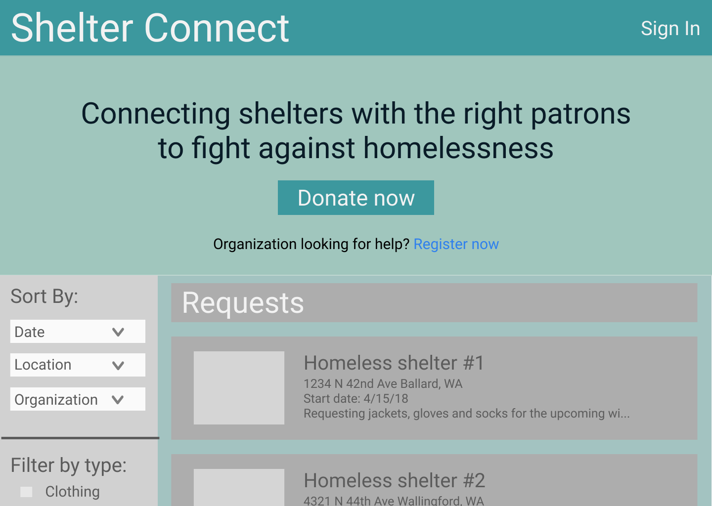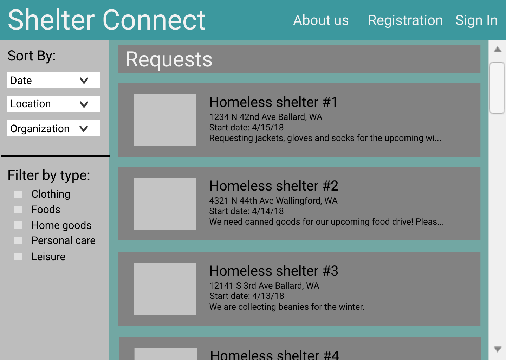
*Figure 1 shows the banner; Figure 2 shows the home page when the banner is hidden.
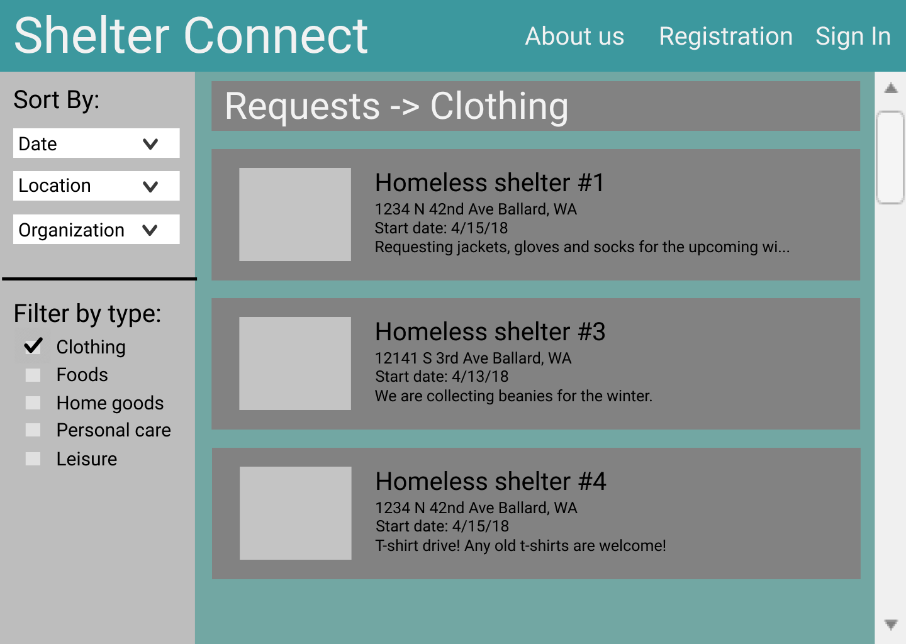
*What the request posts listing looks like after being filtered (Clothing used for this example).
Individual Post:
- There should be a title, which is larger than the font below it.
- There should be a space for a photo on the side of the information.
- The navbar should still be present at the top.
- A description of the good desired should be directly under the title, and left-aligned.
- A line stating the posting date and expiration date of the post.
- There should be a contact form under the listing with features as follows:
- There will be a single input line for the subject.
- There will be a single input line for the responder’s email.
- Validation: must contain an “@” symbol
- There should be an input box for the actual text, >=4 times longer than the input line.
- There should be a submit button at the bottom right of the form.
- The button sends an email from the default website email to the organization’s email.
- Replies will go to the provided email to begin the email chain.
- There should be a listing of information pertaining to the organization who posted it.
- There should be the organization name, phone number, address, hours of operation, and email.
- There should be an edit button for organizations so that they have the option to edit their own posts.
- When clicking the edit button, the organization should be able to start editing from the information that is already there.
- There should be a submit button to finalize any updates.
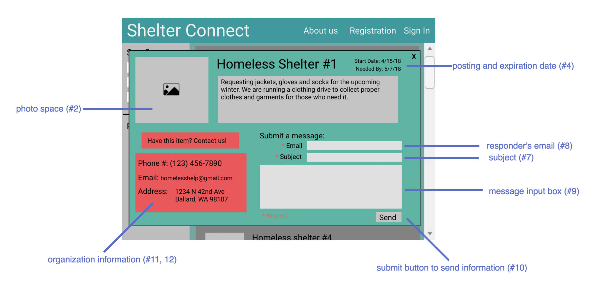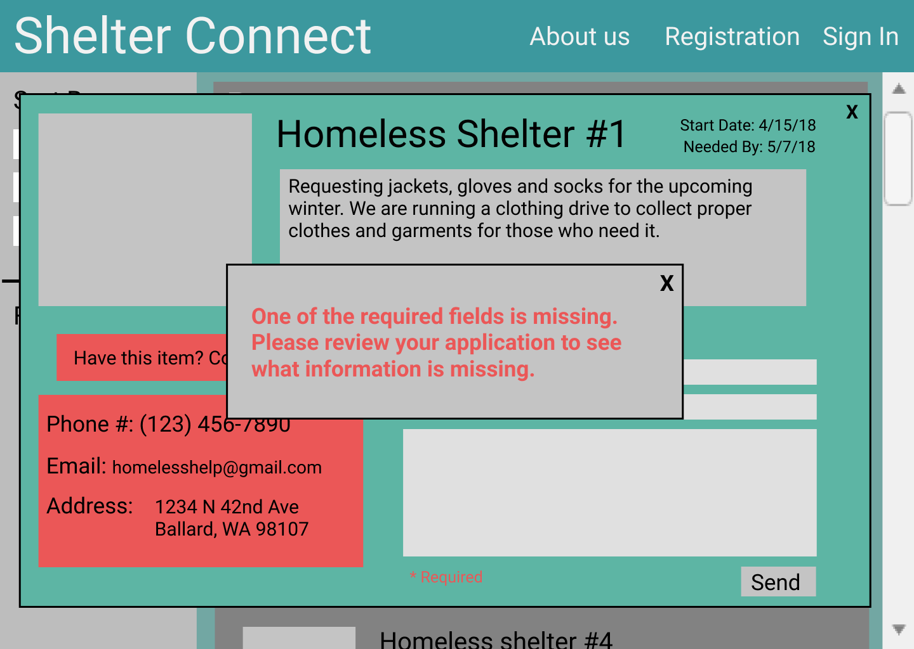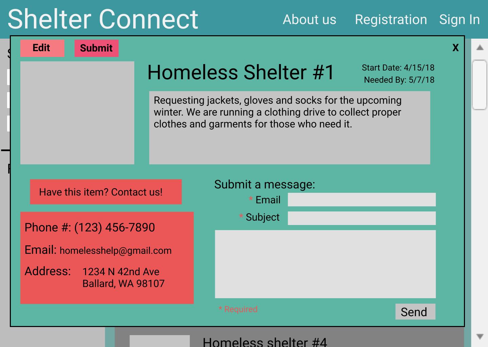
*Figure 1 shows the alert that will appear if a user tries to send a message without properly filling required fields; Figure 2 shows what organizations see when they view their own posts.
Organization Registration:
- There should be a title for the registration form.
- The navbar should still be present at the top.
- There should be an input line for organizations to enter their professional organization name (takes in String).
- There should be an input line for organizations to enter their public phone number (takes in String).
- Only numbers and dashes are allowed
- Must be at least 10 digits long
- There should be an input line for organizations to enter their public email address (takes in String).
- Must contain “@” symbol
- There should be an input line for organizations to enter their main building street address (takes in String).
- There should be an input line for organizations to enter their main building city (takes in String).
- There should be an input line for organizations to enter their main building state (takes in String).
- There should be an input line for organizations to enter their main building zip code (takes in int).
- Must be 5 digits.
- There should be an input line for organizations to enter a password for their account (takes in String).
- Must be more than 6 characters and must have at least one uppercase letter and one number.
- If the requirements are not met, the user will be prompted to change their password.
- The characters will show up as “*” to hide the password.
- There should be an input line for organizations to confirm their password for their account (takes in String).
- If the typed in password is not the same as the password in the previous input line, an alert will show up to show the user that there is an error with their password.
- There should be an input line for organizations to enter their organization’s website, if they have one (takes in String).
- There should be an input line for organizations to enter a description of their organization in the case that they do not have their own website (takes in Strings).
- There should be an asterisk next to the title of each required field that will indicate if the input line is required for an organization.
- Applicable to: Organization name, public phone number, public email address, street address, city, state, zip
- Beneath this section, in a separate section, the form should have a Terms of Agreement to let the user know about privacy issues.
- “I certify that the answers provided are true and complete to the best of my knowledge, on behalf of my organization. I authorize investigation of all statements contained in this application. I understand that false or misleading information given in my application or future requests may result in discharge at any time.”
- There should be a checkbox to indicate that the user agrees with the Terms of Agreement.
- There should be an input line for the organization contact to enter their full name (takes in String).
- There should be an input line for the organization contact to enter their personal email address (takes in String).
- There should be an input line for the organization contact to enter their electronic signature (takes in String).
- There should be a submit button at the end of the form.
- If one of the required fields is not filled in, an alert will display in the front of the screen
- “One of the required fields is missing”
- Users can exit out of the alert box and resume their application
- Username, password, and organization details will be uploaded to the database mentioned above.
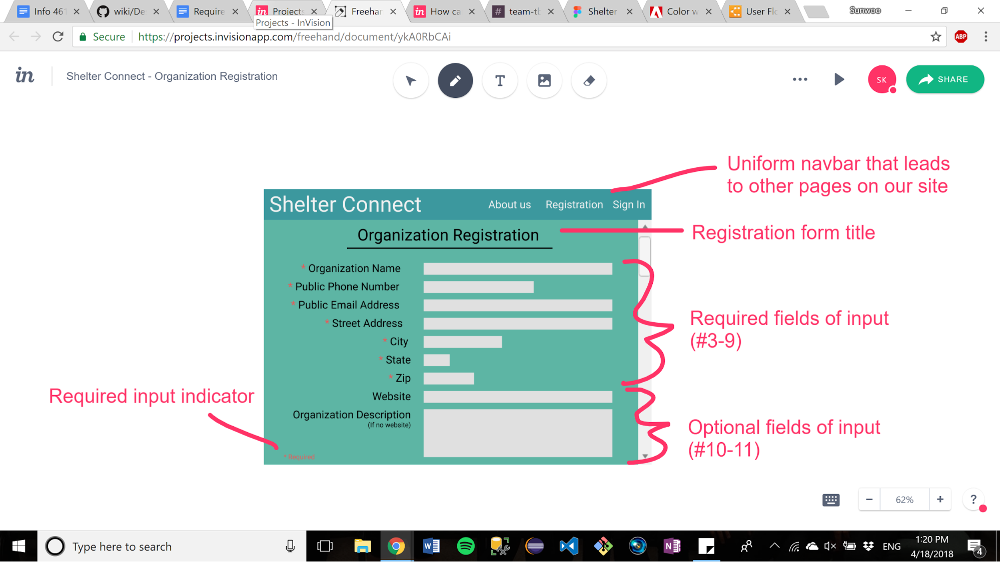
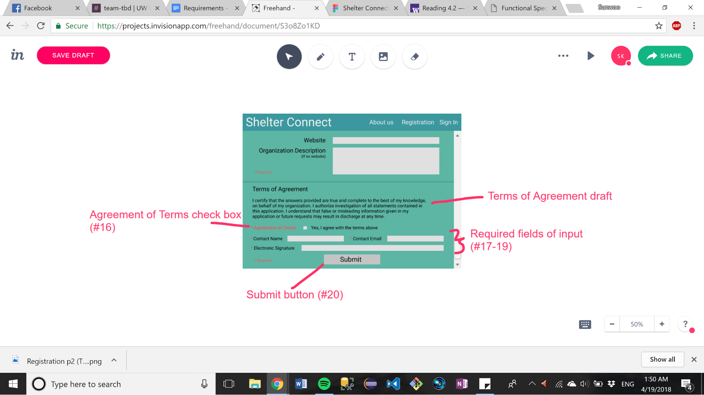
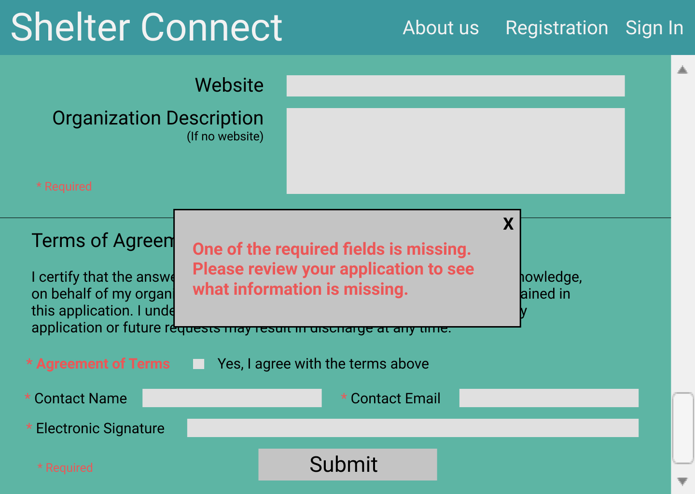
*Alert that will pop up if a required field is missing
Organization Profile:
- There should be a title containing the organization name.
- The title should be a hyperlink to the organization’s website (if they have one).
- Next to the title should be the organization’s logo (if they have one).
- Under the title of the organization, there should be a description of the organization in smaller font:
- On the far left, there should be a title stating “Contact Us!” with the information below:
- There should be the location of the organization
- Contact information for the organization (email, phone #)
- The navbar should still be present at the top.
- Under the items above, there should be a list of donation requests, with the title “Current Requests”:
- Donation requests should be ordered by date posted.
- List should cap at 25 donation requests in which the user can click view next to view the next 25 requests in scrolling format.
- There should be a button for organizations to make a new request post, which will lead them to the new request post page.
- There should be a filter at the top of the list of donation requests so that the user can filter the requests made by the organization:
- The filter refreshes the list component only as it will be component based (React JS)
- Filter options should be as follows:
- active/expired
- By date (newest/oldest)
- For users of that organization, there should be an edit button at the top of the page.
- When clicked, the fields (short descriptions, location, and contact information) become text areas filled with the data that was there before which can be edited
- There will be a save button under the text area once the user is done editing, saving will bring them back to the default organization profile page
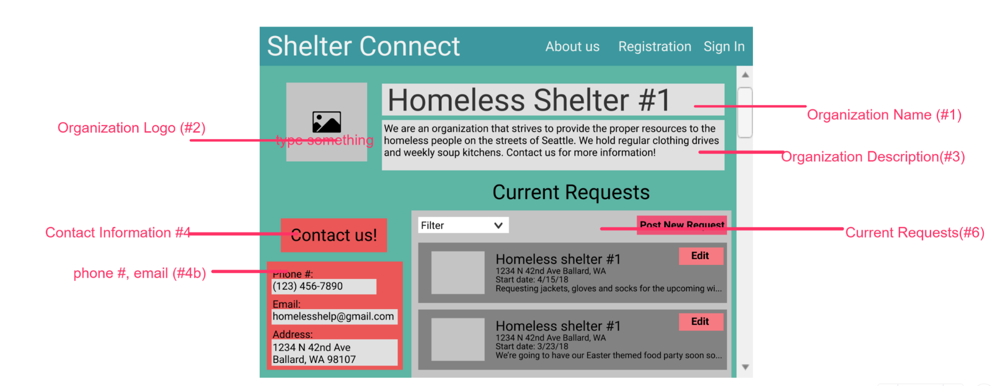
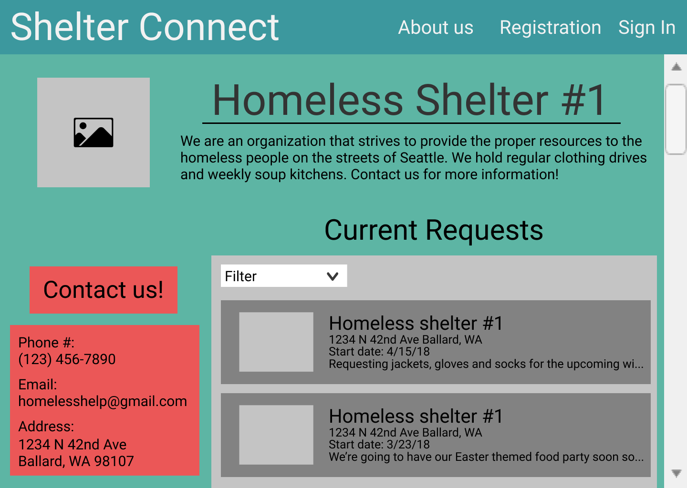
*This shows what users or other organizations will see when viewing an organization’s profile.
About Page:
- The navbar should still be present at the top.
- There should be a title at the top of the page under the navigation bar that says “About Us” in large font.
- There should be a section, distinguished by a horizontal line, that has the title “Our Mission” and under it the following text description in smaller font:
- “Our team values the humanity and integrity of all peoples. We want to connect the organizations that are working for the greater good with volunteers that want to join in the cause to fight against homelessness.”
- There should be a section, distinguished by a horizontal line, that has the title “The Problem” and under it the following text description in smaller font:
- “Homelessness is a serious issue all across America. In a recent study, it was found that over half a million people are considered homeless in the United States. There are over 11,000 people that are homeless in Seattle alone, 47.1% of which are suffering without shelter. We know that there are several organizations in our city that are working towards ending homelessness once and for all, but the issue will not disappear overnight. No matter how noble their mission may be, they still need help.”
- There should be a section, distinguished by a horizontal line, that has the title “Our Solution” and under it the following text description in smaller font:
- “Our solution to combating homelessness in Seattle is to centralize the information that will help homeless shelters receive the proper donations they need. Through our website, organizations can post donation requests based on any specific events or drives that they are running. Some organizations are smaller and may not have the opportunity to advertise for help outside of their immediate circle of connections. But with this website, volunteers and donors can view these posts from any organization to see what items or resources that they can give to these causes. We simply want to connect those who need help with those who can offer it.
We believe that this can really help fight against homelessness. We believe in the organizations that are working hard to provide resources for those in need. We believe in the people that want to help see better living conditions for all. And we believe in the common people of society, who can really make a difference by laying down what they have. We know that our solution will help connect all of these people to make society a better place.”
- There should be a “Who We Are” section to highlight each of our team’s members, listing our names and roles along with showing a picture of our faces.
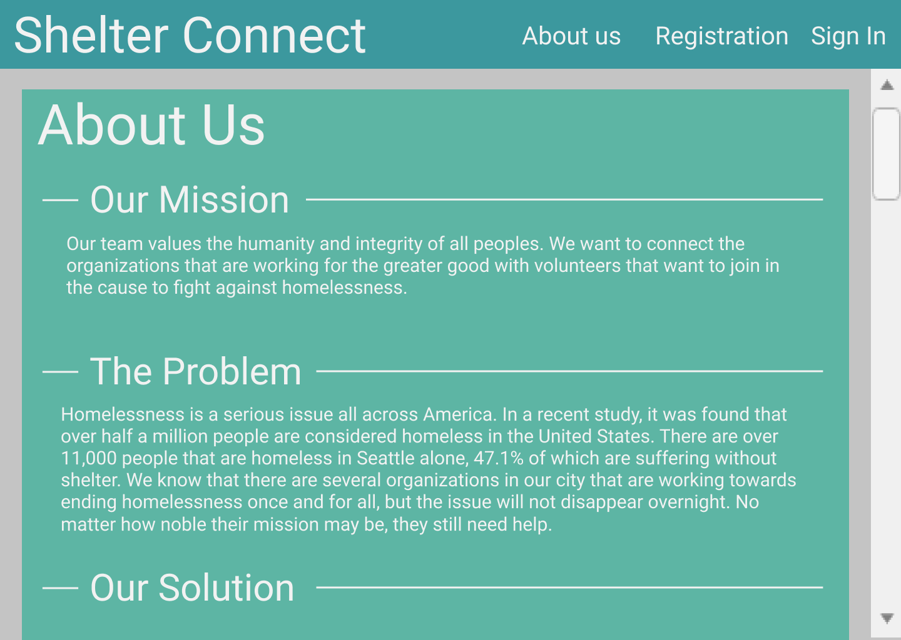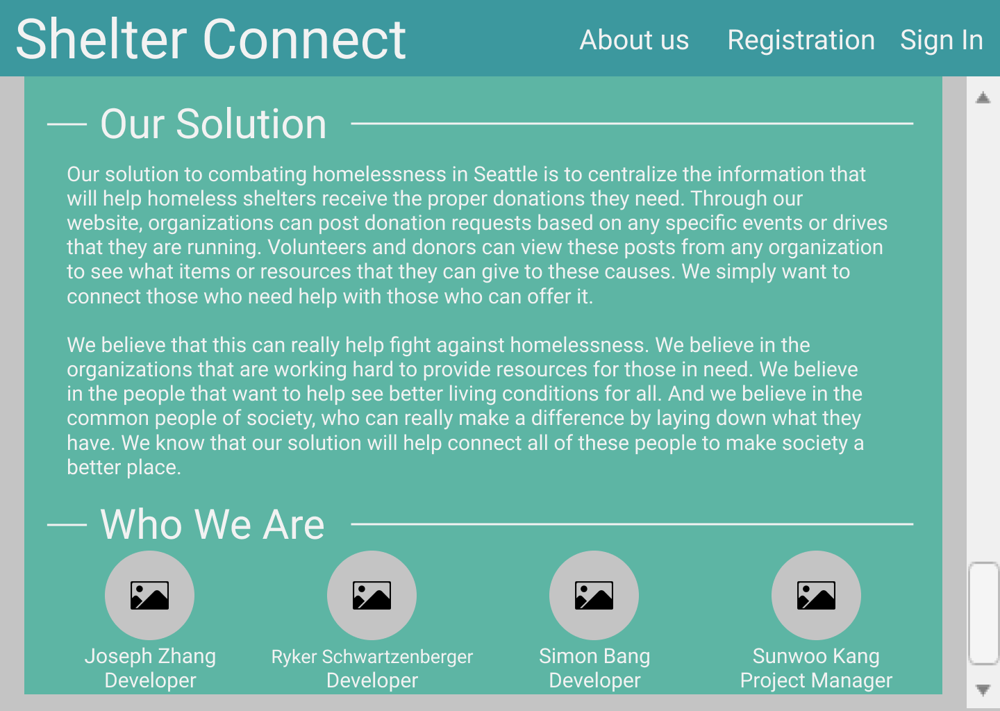
*A draft of what the About Us page will look like, with all of the information about our mission statement, problem statement, solution and a section about our members.
Sign In Page:
- The navbar should still be present at the top.
- There should be a title to indicate that this is a Sign In page.
- There should be an input line for organizations to enter their email (takes in String).
- There should be an input line for organizations to enter their account password (takes in String).
- There should be a sign in button that users press after they filled in their email and password.
- Clicking the button will reference our database to see if the organization and password exist and are correctly matched.
- If the credentials are not correct, the user will be alerted and will have to re-enter their information.
- There should be a reference to the registration page in case the organization hasn’t signed up yet.
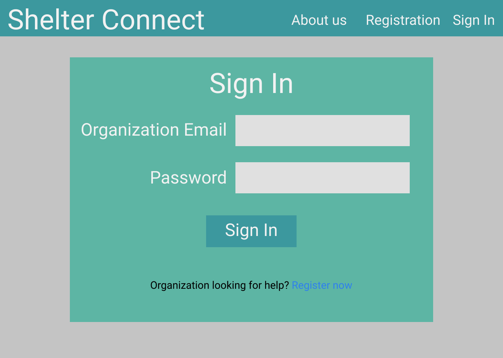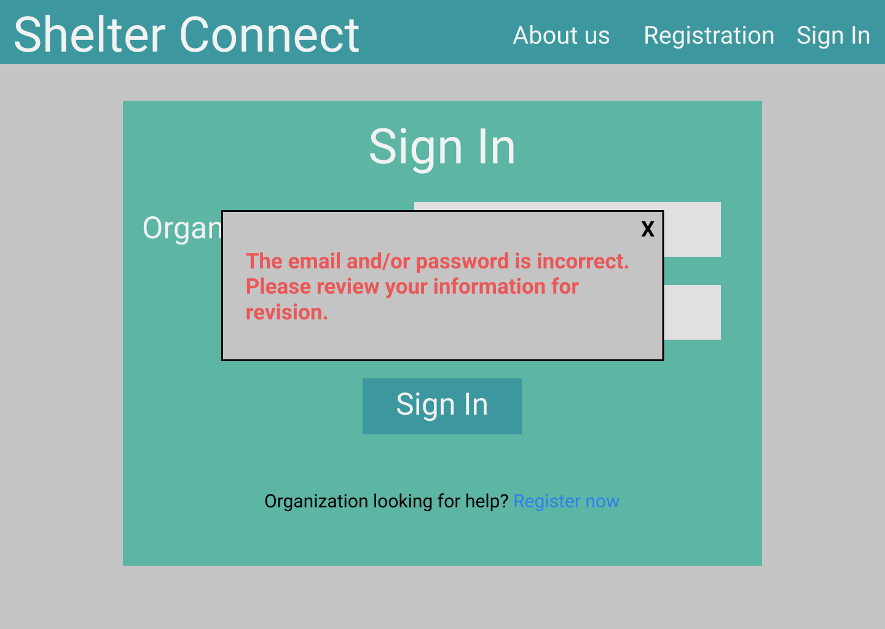
*Figure 1 shows a normal sign in page; Figure 2 shows the alert when credentials are incorrect.
Organization Request Post Form:
- The organizational request form should only be accessible to logged in organizations from their profile page.
- The form will have an end date that the user can specify, combined with the date of the posting, this constitutes how long the request will be shown in the public facing list.
- A maximum post duration of 30 days should be enforced when new donation requests are submitted. Posts will be deleted after 30 days.
- Contact information like phone number, email, and address that are provided on account sign up are auto-filled in the form. (Required information)
- Organizations will be required to specify one of the donation types on this form.
- There will be a text box that allows the user to input a short (no more than 300 words) explanation of the specifics of their donation request. (Optional input)
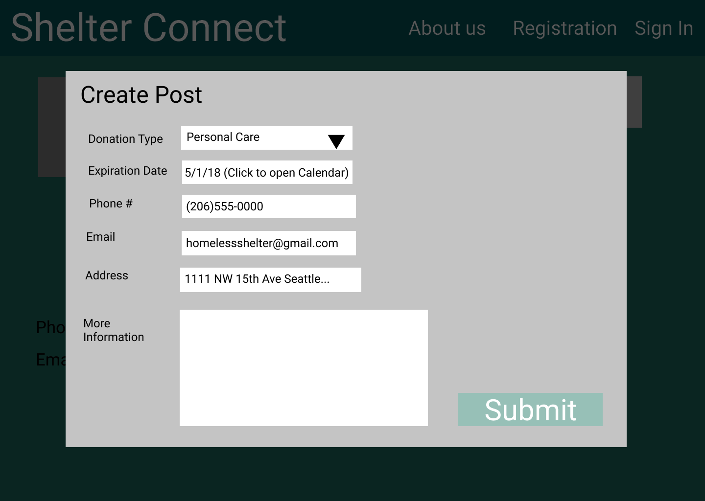
*Example of what an organization will see when making a new request post.